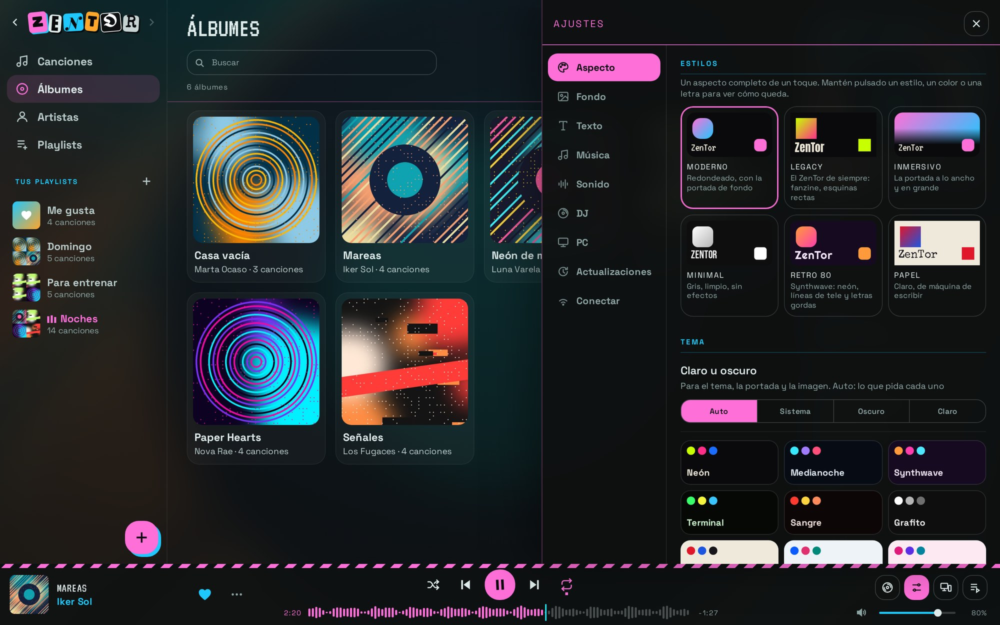

Las dos apps
Dos proyectos hermanos, hechos por la misma persona, con la misma idea: lo tuyo, sin cosas que molesten. Comparten colores, se instalan igual, se sincronizan móvil ↔ PC por la WiFi y se actualizan solas cuando sale versión nueva.
 Música
Música
MixUp
Tu reproductor de música con modo DJ, YouTube y Spotify, ecualizador y pinta de fanzine que se cambia entera.
Ver MixUp ↓ Vídeos
Vídeos
Mix4Up
Tus recomendaciones de YouTube sin un solo Short y sin anuncios, y todos tus vídeos del PC y del móvil.
Ver Mix4Up ↓
App de música · antes ZenTor
MIXUP
Tu música, mezclada como en una sesión. Empezó como un reproductor para escuchar música desde un pendrive sin instalar nada y ha acabado siendo un reproductor completo para PC y móvil.
Modo DJ
Analiza tempo, tono, energía y estribillos, y mete la siguiente canción en el mejor momento. Estilos Suave, Fiesta y Chill.
YouTube y Spotify
Pega un enlace o busca por nombre, escúchala y descárgala para tenerla sin internet. De Spotify, si ya la tienes, suena la tuya.
Suena mejor
Ecualizador, refuerzo de graves, «Mejorar sonido» para auriculares baratos, igualar volumen y fundido cruzado.
Toda tu biblioteca
mp3, m4a, flac, ogg, opus y wav. Portadas, letras, artistas con foto y biografía, playlists y repetidas fuera.
PC y móvil juntos
Escanea un código y se sincronizan playlists, Me gusta y música. Controla desde uno lo que suena en el otro.
A tu gusto
Temas, colores, fondo, letras, iconos y efectos. En español, inglés y catalán. Con estadísticas y tu propio Wrapped.



Las canciones, artistas y portadas de las capturas son inventados.
App de vídeos · hermana de MixUp
Tu YouTube.
Sin un solo Short.
Mix4Up te enseña lo mismo que te recomienda YouTube —tu inicio, tus suscripciones, tu historial— pero sin Shorts y sin anuncios. Y además, todos tus vídeos del PC y del móvil.
Tus recomendaciones
Conecta tu cuenta y el inicio es el tuyo, con scroll infinito. La sesión se guarda solo en tu aparato.
Cero Shorts
Ni en el inicio, ni en búsquedas, ni en canales, ni en relacionados, ni en suscripciones. Ni pestaña de Shorts.
Rapidísimo
Al abrir un vídeo se baja entero en segundo plano con varias conexiones: saltar y cambiar de calidad es al momento.
Tus vídeos
MP4, MKV, WebM, MOV, AVI… con miniaturas, duración y «seguir donde lo dejaste».
Descargar
Cualquier vídeo de YouTube en la calidad que elijas, o solo el sonido.
Reproductor completo
Gestos, velocidad, subtítulos, imagen dentro de imagen, tramo A-B, temporizador para dormir y en segundo plano.
Recreación de la interfaz: los vídeos y canales son inventados.
¿Cuál me bajo?
Las dos, si quieres: no se pisan. Una es para escuchar, la otra para ver.
| Para qué | Escuchar tu música | Ver YouTube y tus vídeos |
| Lo más suyo | Modo DJ que mezcla solo | Tu inicio de YouTube sin Shorts |
| YouTube | Buscar, escuchar y bajar canciones | Tu cuenta: inicio, suscripciones, listas |
| Archivos tuyos | mp3, m4a, flac, ogg, opus, wav | MP4, MKV, WebM, MOV, AVI… |
| Windows (instalador y portable) | Sí | Sí |
| Android (APK) | Sí | Sí |
| Móvil ↔ PC por WiFi | Sí | Sí |
| Se actualiza sola | Sí | Sí |
| Anuncios o cuentas propias | No | No |
| Código abierto | Sí | Sí |
Descargas
Elige la app y tu aparato. Los botones bajan siempre la versión más nueva; para el móvil, escanea el QR con la cámara.
- Abre el instalador. Si sale «Windows protegió su PC», pulsa Más información › Ejecutar de todas formas.
- Tu música aparece sola: lee tu carpeta Música. Para añadir más, arrastra canciones a la ventana.
- Dale al play y, si te apetece, al disco de arriba: el modo DJ mezcla las siguientes él solo.
- Descárgalo e instálalo: en el PC, el instalador; en el móvil, el APK.
- Conecta tu cuenta de YouTube con el botón «Conectar con YouTube». La sesión se queda solo en tu aparato.
- Listo: tu inicio, sin Shorts. Si quieres, junta el móvil con el PC en Ajustes escaneando un QR.
Novedades
Salen solas de GitHub: en cuanto se publica una versión de cualquiera de las dos, aparece aquí.
Cargando versiones…
Todas las versiones
Cualquier versión anterior, por si la necesitas. Tus datos se conservan al cambiar de versión.
| Versión | Fecha | Instalador | Portable | Android |
|---|---|---|---|---|
| Cargando… | ||||
| Versión | Fecha | Instalador | Portable | Android |
|---|---|---|---|---|
| Cargando… | ||||
¿Es seguro? Sí
¿Por qué avisa Windows o Android?
Porque las apps no están firmadas con un certificado de pago (cuesta cientos de euros al año) ni vienen de una tienda oficial. No es por lo que hacen.
Windows: Más información › Ejecutar de todas formas.
Android: Más detalles › Instalar de todas formas.
Todo a la vista
El código de las dos es abierto y los instaladores los compila GitHub Actions a partir de él, no un ordenador particular. Mix4Up, además, pasa pruebas automáticas en Windows y Android antes de publicarse.
Tus datos, contigo
Sin cuentas propias, sin anuncios y sin servidores que guarden lo tuyo. La sincronización móvil ↔ PC va por tu WiFi. Tu sesión de YouTube nunca sale de tu aparato.
¿Quieres comprobarlo? Sube el archivo a VirusTotal, que lo pasa por más de 70 antivirus.
Acerca de
¡Buenas! Soy luckicla y hago las dos apps. MixUp empezó como ZenTor, un reproductor para escuchar mi música desde un pendrive, y Mix4Up nació después como su hermana para los vídeos. Esta web, Mix², las junta en un solo sitio.
MixUp existe sobre todo gracias a Kilphys, la persona para la que se hizo. Gracias por todo.
Las dos son gratis y de código abierto para uso no comercial (licencia PolyForm Noncommercial 1.0.0). Si algo falla o se te ocurre una idea, dímelo en GitHub: MixUp · Mix4Up.
Parte de los proyectos se ha hecho con ayuda de IA (Claude, de Anthropic).